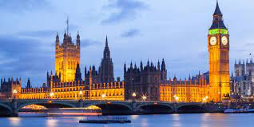
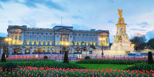
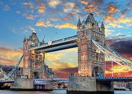
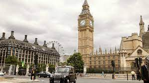

LONDRES
La ciudad donde uno nunca sabe lo que pasará mañana
Un poco sobre Londres
Conozcamos resumidamente la historia de esta estupenda ciudad
Londres (en inglés, London), es la capital y mayor ciudad de Inglaterra y del Reino Unido.34 Situada a orillas del río Támesis, Londres es un importante asentamiento humano desde que fue fundada por los romanos con el nombre de Londinium hace casi dos milenios.5 El núcleo antiguo de la urbe, la City de Londres, conserva básicamente su perímetro medieval de una milla cuadrada. Desde el siglo XIX el nombre «Londres» también hace referencia a toda la metrópolis desarrollada alrededor de este núcleo.6 El grueso de esta conurbación forma la región de Londres y el área administrativa del Gran Londres,7 gobernado por el alcalde y la asamblea de Londres.
Londres es una ciudad global, uno de los centros neurálgicos en el ámbito de las artes, el comercio, la educación, el entretenimiento, la moda, las finanzas, los medios de comunicación, la investigación, el turismo o el transporte.9 Es el principal centro financiero del mundo junto con Nueva York.101112Con un PIB de 801,66 mil millones de euros en 2017, es la economía urbana más grande del continente europeo.131415 Londres es también una capital cultural mundial,16171819 la ciudad más visitada considerando el número de visitas internacionales20 y tiene el mayor sistema aeroportuario del mundo según el tráfico de pasajeros.21 Asimismo, las 43 universidades de la ciudad conforman la mayor concentración de centros de estudios superiores de toda Europa.22 En el año 2012 Londres se convirtió en la única ciudad en albergar la celebración de tres Juegos Olímpicos de Verano.
En esta ciudad multirracial convive gente de un gran número de culturas que hablan más de trescientos idiomas distintos.24 La Autoridad del Gran Londres estima que en 2015 la ciudad tiene 8,63 millones de habitantes,25 que supone el 12,5 % del total de habitantes del Reino Unido.26 El área urbana del Gran Londres, con 10 470 00027 habitantes, es la segunda más grande de Europa, pero su área metropolitana, con una población estimada de entre 12 y 14 millones,2829 es la mayor del continente. Desde 1831 a 1925 Londres, como capital del Imperio británico, fue la ciudad más poblada del mundo.
Londres cuenta con cuatro enclaves declarados Patrimonio de la Humanidad: la Torre de Londres, el Real Jardín Botánico de Kew, el sitio formado por el Palacio, la Abadía de Westminster, la Iglesia de Santa Margarita y Greenwich (donde se encuentra el Real Observatorio que marca el meridiano de Greenwich y el tiempo medio).31 Otros lugares famosos de la ciudad son el Palacio de Buckingham, el London Eye, Piccadilly Circus, la Catedral de San Pablo, el Puente de la Torre o Trafalgar Square. Londres cuenta también con numerosos museos, galerías de arte, bibliotecas, eventos deportivos y otras instituciones culturales como el Museo Británico, la National Gallery, la Tate Modern, la Biblioteca Británica y los cuarenta teatros del West End.32 El metro de Londres, que en 2013 cumplió 150 años, es el más antiguo del mundo.
Qué ver en Londres
Veamos algunos de los sitios con más interés turístico
-
Buckingham Palace
El palacio de Buckingham (en inglés, Buckingham Palace) es la residencia oficial del monarca británico en Londres. También se utiliza para ceremonias oficiales, visitas de Estado y visitas turísticas. Es famoso por albergar una parte sustancial de la Royal Collection, extraordinario conjunto de obras artísticas fruto del coleccionismo real. El palacio es un punto de reunión de los británicos en tiempos de crisis y de festividad.
«El Palacio de Buckingham» o, simplemente, «El Palacio», también es la metonimia utilizada para designar la fuente de comunicados de prensa provenientes de la familia real británica.
-
Tower Bridge
El Puente de la Torre (en inglés, Tower Bridge) es un puente basculante y colgante de Londres, construido entre 1886 y 1894, que cruza el río Támesis cerca de la Torre de Londres y se ha convertido en uno de los símbolos de la ciudad. Por esto, el Puente de la Torre es confundido a veces con el Puente de Londres, situado unos ochocientos metros río arriba.
El Puente de la Torre es uno de los cinco puentes de Londres que son actualmente propiedad de Bridge House Estates, un fideicomiso de caridad supervisado por la City of London Corporation. Es el único de los puentes del fideicomiso que no conectan directamente la City de Londres con la orilla de Southwark, dado que su lado norte está en Tower Hamlets.
-
London Eye

El London Eye es una gran noria situada en el South Bank del río Támesis en Londres, Reino Unido. Es la noria más alta de Europa7 y la atracción turística más popular del Reino Unido con más de 3,75 millones de visitantes al año.
Tiene 135 m de altura y el círculo de la noria tiene un diámetro de 120 m. Cuando abrió al público en el año 2000 era la noria más alta del mundo. Sin embargo, su altura fue superada por la Estrella de Nanchang (160 m) en 2006, por el Singapore Flyer (165 m) en 2008, y por el High Roller de Las Vegas (168 m) en 2014. Sostenida por una estructura con forma de A solo por un lado, al contrario que las norias más altas de Nanchang y Singapur, el London Eye es descrito por sus propietarios como «la noria en voladizo más alta del mundo».
El London Eye era el mirador público más alto de Londres10 hasta que fue superado por el mirador situado en la planta 72 de The Shard, a 245 m de altura,11 que abrió al público el 1 de febrero de 2013. El London Eye linda con el lado oeste de los Jubilee Gardens (que previamente albergaron el antiguo Dome of Discovery), y está situado en el South Bank del río Támesis entre el Puente de Westminster y el Puente de Hungerford, junto al Salón Condal, en el Municipio de Lambeth.
-
Big Ben
Big Ben es el nombre con el que se conoce a la gran campana del reloj situado en el lado noroeste del Palacio de Westminster, la sede del Parlamento del Reino Unido, en Londres. Popularmente, por extensión, se utiliza también este nombre para el reloj de la torre. Su nombre oficial era Clock Tower,2 hasta que el 26 de junio de 2012, en honor al jubileo de diamante de la reina Isabel II, se decidió que la torre pasaría a llamarse Elizabeth Tower (Torre de Isabel).
La torre alberga el reloj de cuatro caras más grande del mundo, y es la decimocuarta torre de reloj más alta del mundo.4 Celebró su 150 aniversario el 31 de mayo de 2009,5 y se llevaron a cabo diversos actos de conmemoración.6 La torre se completó en 1858 y el reloj comenzó a funcionar el 7 de septiembre de 1859.